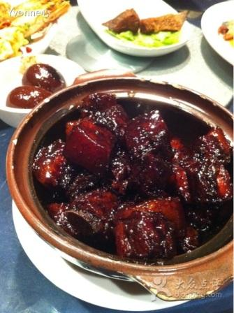
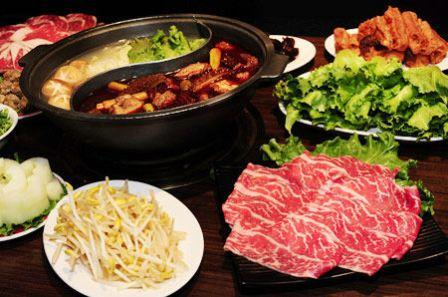

Rachel is from China. Prior to joining Kellogg, she was in management consulting with McKinsey, Shanghai Office. During the summer of 2014, she had a great time interning at a B2B software company in the Bay Area and decided to become a bit more nerdy afterward. This is also the reason why she is creating this web page. While Rachel traveled a lot as a consultant, she took the opportunity to explore all the great food in whichever city/town she traveled to and she loves cooking at home, too. She is also passionate about watching all kinds of sports games, screaming and yelling with friends.
Best-in-class traditional Shanghainese cuisine in a popular location
Taiwanese-style spicy hotpot with great broth and varieties of dishes
| Sports | Games per Week |
|---|---|
| English Premier League | 2 |
| NBA | 3 |